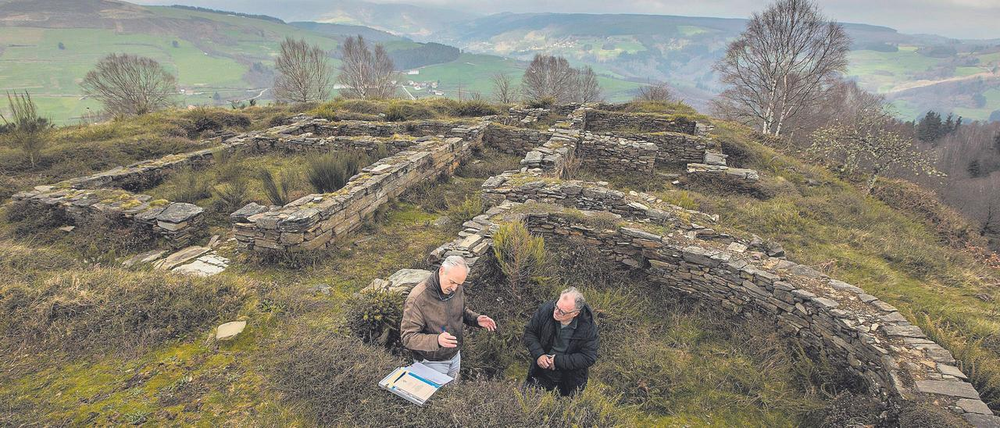

Página Principal
Gastronomía
Rutas
Meteorología
Juego
Reservas
Castro de Coaña
Castro de Mohias

Coaña
Ortiguera
Castro de Coaña
←
→
Página principal
El tiempo en coaña ahora
Situación del Concejo de Coaña
Noticias recientes acerca de Coaña
Fecha y hora de la última actualización